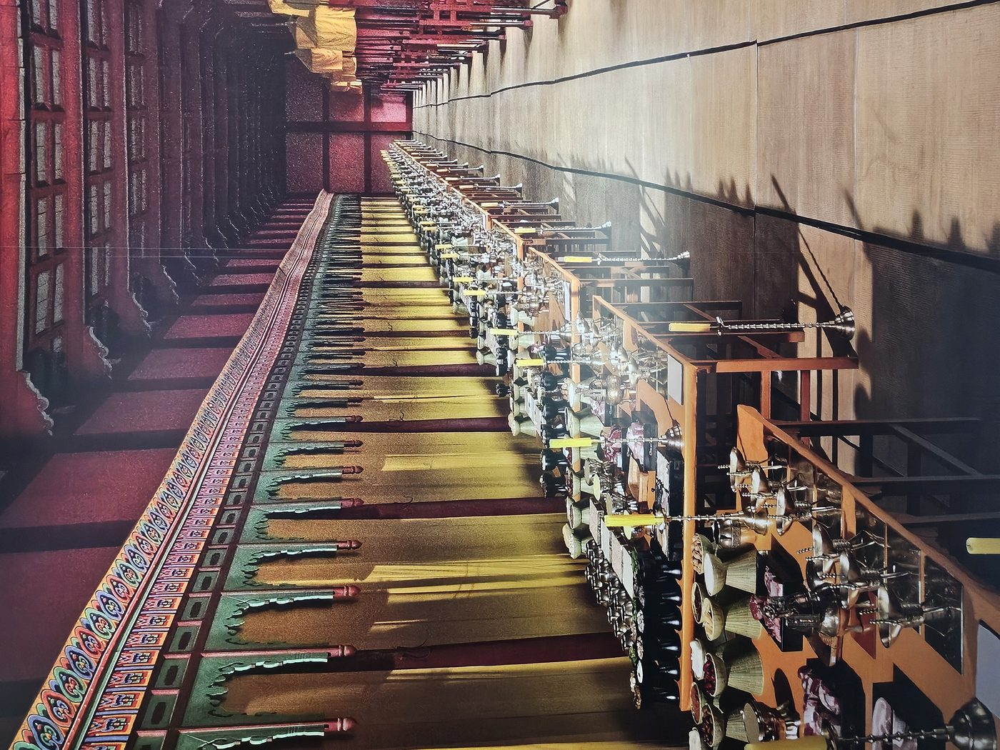
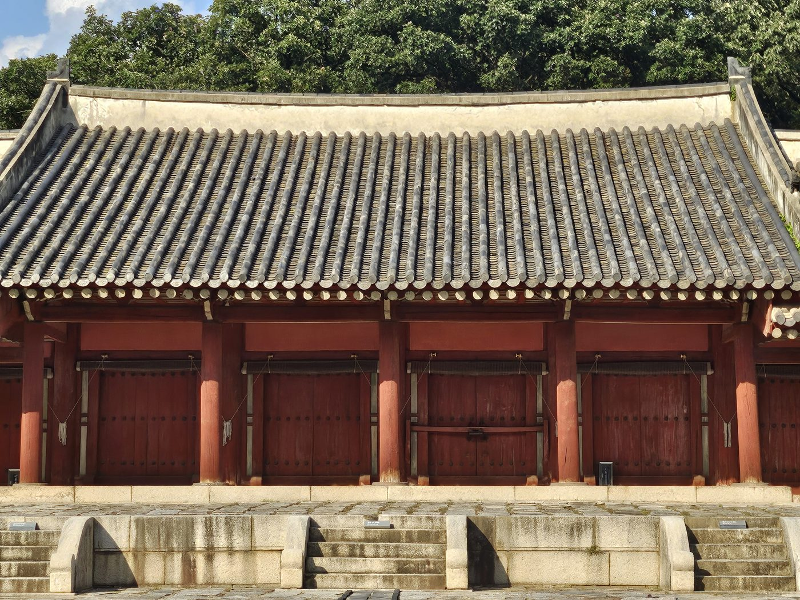

새 나라를 세운 사람이 제일 먼저 지은 건물이 무엇이었을까. 왕이 사는 궁궐? 아니다. 이성계가 한양에서 가장 먼저 완공한 건물은 죽은 조상을 모시는 사당이었다. 종묘. 그것은 "나는 하늘에서 뚝 떨어진 왕이 아니라, 정통한 혈통에서 나온 왕이다"라는 선언이었다.
궁보다 먼저 지은 이유 — 정통성이란 무엇인가
1394년 10월, 이성계는 개경에서 한양으로 수도를 옮겼다. 짐을 풀자마자 착공에 들어간 것은 경복궁이 아니었다. 종묘였다. 종묘는 그해 10월에 가장 먼저 착공에 들어갔고, 경복궁 공사는 그 뒤에 시작됐다. 두 건물은 완공도 같은 해, 같은 달(1395년 9월)에 마쳤지만, 착수의 순서만큼은 분명히 종묘가 먼저였다.
이건 단순한 공사 순서의 문제가 아니다. 유교 국가에서는 종묘와 사직(社稷)이 왕궁보다 우선순위가 높다는 원칙이 있었다. 《주례(周禮)》의 "좌묘우사(左廟右社)" — 왕궁을 기준으로 왼쪽에 종묘, 오른쪽에 사직을 두라는 규정이 그 뿌리다. 이성계와 정도전은 이 원칙을 그대로 따랐다. 아니, 정확히는 이 원칙을 '활용'했다.
"고려를 무너뜨린 사람이 새 나라의 왕이 될 자격이 있는가?" — 이 질문에 대한 이성계의 답이 종묘다. 조상이 있고, 그 조상의 덕을 이어받은 혈통이 있다. 내 뒤에는 근거가 있다.
— 종묘 창건의 정치적 맥락오목대에서 대풍가를 부르던 장수가, 이제 죽은 조상들을 앞세워 왕위의 정당성을 주장하는 군주가 됐다. 종묘는 그 전환을 돌에 새긴 건물이다.
살아있는 왕보다 죽은 조상이 강했다 — 추존 4조(追尊四祖)
종묘 정전에는 역대 왕의 신주가 모셔진다. 그런데 이성계는 자기 자신을 모시기 전에, 먼저 죽은 조상 네 명을 왕으로 만들었다. 왕이 된 적 없는 사람에게 사후에 왕 칭호를 주는 것 — 이것을 '추존(追尊)'이라 한다.
마치 입학도 못한 학교에서 명예졸업장을 주는 것처럼, 이성계는 할아버지의 할아버지까지 거슬러 올라가 차례로 왕 자리를 부여했다. 왜? 답은 하나다. "나는 아무것도 없는 데서 갑자기 튀어나온 왕이 아니다. 내 집안은 원래 왕이 될 집안이었다."
목조→익조→도조→환조로 이어지는 4대 계보는, 전주에서 북방으로, 원나라 세력권에서 다시 고려로 돌아오는 이씨 가문의 생존과 성장 서사다. 이성계는 이 서사를 "왕조의 뿌리"로 포장해 종묘에 영구 기록했다.
추존은 단순한 효도가 아니다. 왕이 된 적 없는 조상에게 왕 칭호를 주는 행위는, 그 자체로 "이 가문은 왕이 될 운명이었다"는 정치적 선언이다. 조선 건국의 정당성을 혈통과 하늘의 뜻으로 포장하는 가장 강력한 수단이 바로 종묘 추존이었다.
제례(祭禮) — 왕이 조상 앞에 무릎을 꿇는 공간

정전 내부는 평소에 비공개다. 신주(神主)가 모셔진 공간은 제례 때만 문이 열린다. 이 사진은 박물관 전시 패널에서 촬영한 것인데, 오히려 평소에는 볼 수 없는 공간을 정확하게 보여준다.
방 하나하나가 신실(神室)이다. 각 신실 안에 왕과 왕비의 신주가 나무패에 새겨져 봉안된다. 신주란 쉽게 말하면 "이 나무패 안에 돌아가신 분의 혼이 머문다"고 믿는 유교식 위패다. 왕이 살아있는 동안 제일 두려워해야 할 것은 이 신주들 앞에 서는 일이었다 — 조상이 보고 있다는 뜻이니까.
왕은 종묘 앞에서 무릎을 꿇었다. 살아있는 신하들 앞에서는 절대 무릎을 꿇지 않는 왕이, 죽은 조상 앞에서만은 엎드렸다. 그 무릎이 왕권을 더 강하게 만들었다.
— 종묘 제례의 정치적 의미역설처럼 들리지만 사실이다. 왕이 조상 앞에 고개를 숙이는 의식을 백성과 신하들이 보면, 이 왕조가 얼마나 오래된 하늘의 뜻을 받은 집안인지가 눈앞에 펼쳐진다. 종묘 제례는 왕의 겸손이 아니라, 왕조 정통성의 연례 퍼포먼스였다.
- 희생(犧牲)
- 소·양·돼지 — 조상에게 올리는 가장 격식 있는 제물
- 제기(祭器)
- 청동·은·도자기 제기에 곡물·과일·술·포 등 각종 음식 진설
- 향로(香爐)
- 향을 피워 혼백을 부르는 의식 도구 — 신주에 혼이 강림하는 신호
- 촛대
- 어둠을 밝혀 조상의 혼이 편히 머물 수 있게 하는 장치
- 축문(祝文)
- 왕이 조상에게 바치는 글 — "나라를 잘 다스리겠습니다" 서약의 형식
정전(正殿)과 영녕전(永寧殿) — 두 건물이 나뉜 이유

종묘에는 건물이 두 채다. 정전(正殿)과 영녕전(永寧殿). 처음 온 방문객들은 왜 두 채인지 의아해한다. 답은 간단하다 — 정전이 꽉 찼기 때문이다.
원래 정전에만 모두 모실 계획이었다. 그런데 왕이 계속 늘어나면서 자리가 부족해졌다. 세종 때 영녕전을 새로 지어, 추존 4조(목조·익조·도조·환조)와 왕위에서 물러난 왕들의 신주를 영녕전으로 옮겼다.
다시 말해 태조 이성계 본인은 정전 제1실에 있고, 그가 사후 왕으로 만들어준 4대 선조들은 영녕전에 있다. 두 건물을 합쳐야 비로소 이성계의 '혈통 정치' 전략이 완성된다.
태조는 서쪽 첫 번째 칸(제1실)에 봉안 — 가장 높은 자리. 왕이 추가될수록 동쪽으로 신실이 늘어남.
현재 19칸 중 태조의 위치는 변하지 않는다.
종묘는 어떻게 왕권을 강화했나
종묘가 단순한 사당이었다면 조선이 가장 먼저 지을 이유가 없었다. 종묘는 태조 이성계가 설계한 왕권 강화 시스템의 핵심 부품이었다. 구체적으로 세 가지 방식으로 작동했다.
이성계는 칼로 나라를 세웠지만, 종묘로 나라를 지켰다. 무력으로 만든 왕조는 더 강한 무력에 무너질 수 있다. 하지만 조상과 하늘의 뜻으로 만든 왕조는 그 논리 체계 전체를 부숴야만 무너뜨릴 수 있다. 태조 이성계가 선택한 것은 후자였다.
종묘가 단순한 사당을 넘어 국가 존립의 근거 자체였음을 말해준다.
아는 만큼 보이는 것들
종묘는 처음 보면 그냥 길고 붉은 건물이다. 특별히 화려하지도 않고, 용이나 봉황 장식도 없다. 오히려 너무 단조로워서 지루하다고 느끼는 사람도 있다.
그런데 그 단조로움이 의도다. 종묘는 죽은 자들의 공간이기 때문에, 살아있는 자들의 화려함을 철저히 배제했다. 경복궁의 근정전이 왕의 권위를 과시하는 공간이라면, 종묘의 정전은 왕조차 고개를 숙이는 공간이다. 단청도 억제했고, 높이도 낮췄다. 그 낮음과 길음이 오히려 압도적인 이유다.
정전 앞 월대(月臺)에 올라 건물 전체를 바라볼 것. 중앙 신문(神門)에서 좌우로 신실이 끝없이 이어지는 풍경 — 그 선의 길이가 조선 500년의 길이다. 정전 19칸 안에는 태조부터 순종까지 19명의 왕과 왕비 신주가 봉안되어 있다. 월대 아래 박석(薄石)이 깔린 정원을 걷다가 멈추고, 이 건물을 짓게 한 사람이 600년 전 어떤 계산을 했는지 생각해 볼 것.
종묘는 1995년 유네스코 세계문화유산으로 등재됐고, 종묘제례와 종묘제례악은 2001년 유네스코 인류무형문화유산으로 등재됐다. 매년 5월 첫째 일요일, 정전 앞마당에서 조선 왕실 제례 의식이 그대로 재현된다. 이 날 방문하면 태조 이성계가 설계한 의식을 눈앞에서 볼 수 있다.
- 위치
- 서울시 종로구 종로 157 (훈정동 1)
- 관람 시간
- 화~일 09:00–18:00 (11~1월 ~17:30) · 월요일 휴관
- 입장료
- 일반 1,000원 (만 24세 이하·만 65세 이상 무료)
- 관람 방식
- 평일 자유 관람 / 정기 해설 투어 하루 수회 운영
- 유의 사항
- 정전 내부는 제례 행사 시에만 공개 (평소 외관만 관람)
- 종묘제례
- 매년 5월 첫째 일요일 — 정전 앞마당 공개 봉행
종묘에서 지워진 여자 — 신덕왕후 강씨
태조 이성계가 가장 사랑한 여자는 첫째 부인 신의왕후 한씨가 아니었다. 나중에 맞은 계비 신덕왕후 강씨였다. 태조는 1396년 신덕왕후가 세상을 떠나자 지금의 정동(덕수궁 근처)에 능을 조성하고 — 도성 안에 왕비 능을 둔 것은 조선 왕릉 역사에서 이것이 유일하다 — 매일 그곳을 바라보며 슬퍼했다는 기록이 있다.
여기서 많은 사람이 오해하는 지점이 하나 있다. 신덕왕후의 신주는 죽자마자 종묘에 들어가지 못했다. 남편 태조가 아직 살아있었기 때문이다. 종묘 정전은 왕과 왕비 두 사람의 신주가 함께 들어가야 하는 곳이었다 — 부부가 나란히 앉는 방과 같은 구조다. 아내가 먼저 세상을 떠나도 남편이 살아있는 동안에는 그 신주가 궁궐 안 임시 사당(혼전·魂殿)에서 대기해야 했다. 마치 가족사진은 온 가족이 다 모여야 찍을 수 있는 것과 같은 이치다. 신덕왕후의 신주는 그녀가 살던 인안전(仁安殿)에 모셔진 채, 남편이 죽는 날만 기다리는 신세가 됐다.
공평하게 말하면, 이 원칙은 신의왕후에게도 똑같이 적용됐다. 그녀 역시 1391년에 죽었지만 태조가 살아있는 동안에는 종묘에 못 들어가고 인소전(仁昭殿)이라는 별도의 사당에서 기다려야 했다. 즉 태조가 살아있는 한 두 왕비 모두 종묘 밖에 있었다 — 여기까지는 신의왕후도 신덕왕후도 처지가 같았다.
진짜 승부는 1408년, 태조가 세상을 떠나면서 갈렸다. 원칙대로라면 태조의 신주와 함께, 살아생전 그의 아내였던 두 왕비의 신주가 모두 종묘로 들어가야 정상이다. 그런데 새로 왕이 된 태종 이방원은 그렇게 하지 않았다. 그는 친어머니 신의왕후의 사당(인소전)에 아버지 태조의 신주를 합사하고 사당 이름을 문소전(文昭殿)으로 바꿨다. 계모인 신덕왕후는 이 합사 대상에서 처음부터 제외됐다. "당신은 여기 있을 자격이 없으니 나가라"가 아니라, 애초에 "당신은 명단에 없다"였던 것 — 출향(黜享)이라는 말보다 훨씬 조용하고, 훨씬 확실한 배제 방식이다.
종묘에 넣는 것이 정치였다면, 애초에 넣지 않는 것은 더 조용하고 더 확실한 정치였다.
— 신덕왕후 배제 사건의 본질태종이 신덕왕후를 종묘에 들이지 않은 이유는 표면적으로 "적통(嫡統) 왕비가 아니다"는 명분이었지만, 실상은 다르다. 신덕왕후는 자신의 아들 방석을 세자로 올리려 했고, 그 과정에서 이방원과 정면으로 충돌했다. 방석이 세자였다는 것은 이방원이 왕이 될 수 없었다는 뜻이다. 왕자의 난으로 방석을 제거한 이방원에게 신덕왕후는 적(敵)이었다. 종묘 합사 명단에서 빼놓은 것은 단순한 격하가 아니라 정치적 숙청의 사후 완결판이었다.
태종은 살아있는 사람을 죽이는 것만으로는 충분하지 않다고 판단했다. 죽은 신덕왕후의 신주를 애초에 종묘에 들이지 않고, 도성 안 정릉을 밖으로 옮기고, 정릉 석물을 광통교 다리 돌로 써버렸다 — 사람들이 밟고 다니게. "당신은 왕비가 아니었다"는 선언을 돌에 새긴 것이다. 종묘에서 조용히 지워버리는 배제는 죽은 자에 대한 가장 강력한 정치 행위였다.
그리고 273년 후 현종이 복위시킨 것 역시 정치였다. 태종의 행위가 부당했다는 것을 공식 선언함으로써, 현종은 자신의 도덕적 권위를 높였다. 누구의 신주를 종묘에 들이고, 누구를 명단에서 빼놓을지 결정하는 행위는 조선 500년 내내 살아있는 왕들의 권력 게임이었다.
정통성을 쥔 자가 종묘를 쥐고, 종묘를 쥔 자가 나라를 쥔다.
그러나 그 종묘에 아내가 끝내 들어가지 못하는 것을 태조는 막지 못했다.
권력의 논리는 사랑보다 강했다.
조상 다음은 땅이었다
조상을 모셨다면 이제 백성을 먹여 살릴 땅을 모셔야 했다. 그래서 종묘 다음은 사직이었다.